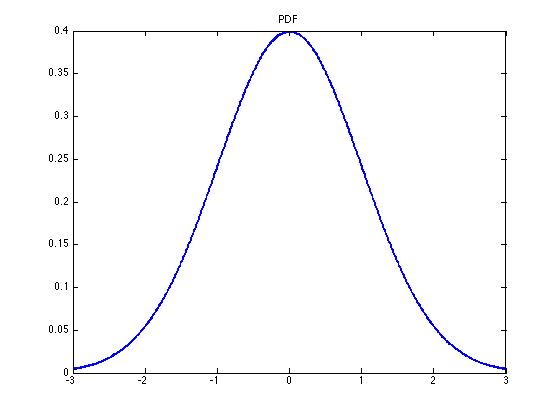
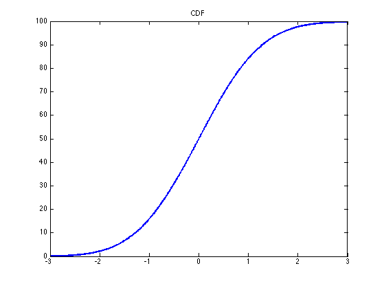

Plot a Gaussian PDF and its CDF
% This file is from pmtk3.googlecode.com xs = -3:0.01:3; mu = 0; sigma2 = 1; p = gaussProb(xs', mu, sigma2); figure; plot(xs, p, 'LineWidth', 2.5); title('PDF'); printPmtkFigure gaussian1d figure; plot(xs, cumsum(p), 'LineWidth',2.5); title('CDF'); printPmtkFigure gaussianCDF 